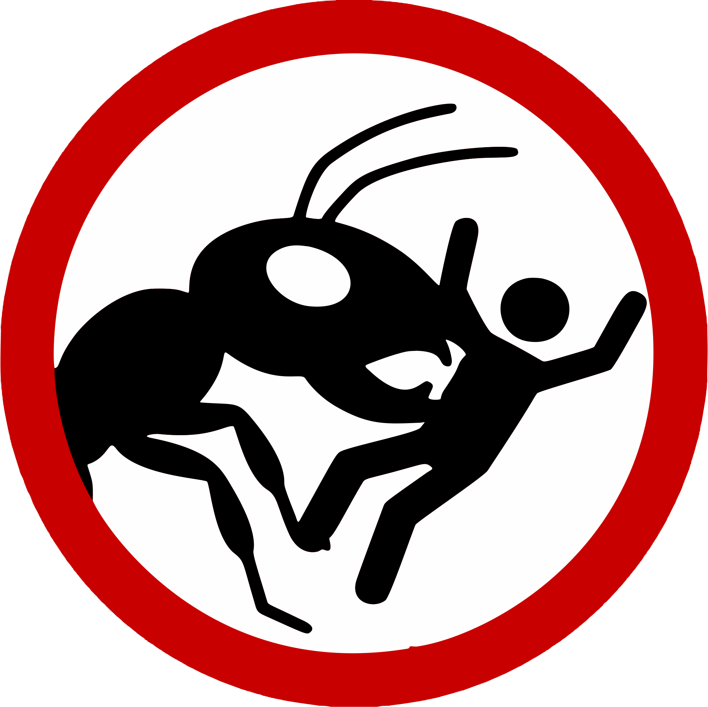

Passing
Next hand
The classic trick-taking game

© BugVictim 2026
v1.0
Click to start
Scorecard
Close
📱
Please turn your phone sideways
Infernal Tricksters is played in landscape.
Back to the game
Quit this game?
The scores so far will be lost.
Keep playing
Quit
New to the table?
Learn the rules in one quick hand.
No thanks
Play the tutorial
Infernal
Tricksters
© BugVictim 2026
Your name
Game
Rules
Look & feel
Players
3
4
5
🎲
Opponents
Lost souls
Imps
Hellhounds
Seats
Length
Standard
Short
First deal
You
Random
Opponent
How to play
Standard rules
How to play
Theme
Infernal
Napoleonic
Classic
Custom
Or choose each part yourself
Table
Cave
Heart
Empire
Waterloo
Retreat
Green
Red
Blue
Green print
Red print
Blue print
Walnut
Mahogany
Tavern
Marble
Souls
Style
Standard
Napoleonic
Painted
Infernal
Cast
Infernal
Napoleonic
Colours
♥
♦
♣
♠
Four colours
Red & black
Card back
Speed
Normal
Fast
Portraits
Living
Still
Close